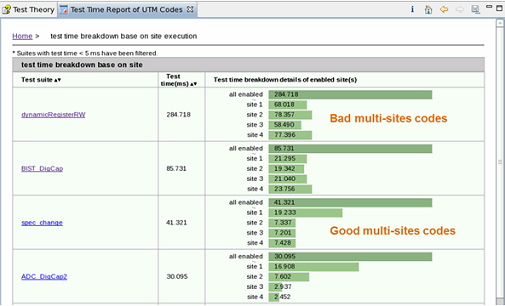

Test time breakdown based on site execution
Test Time Breakdown Analyzer can analyze the test time of each site. This can reflect the quality of your multi-site test method.
To view the detailed report of the analysis, click test time breakdown base on site execution in the Test time analysis report table.
The report is illustrated in the following screenshot:

Functional changes
- Introduced in SmarTest 7.3.2